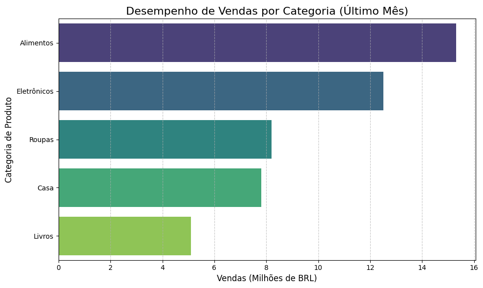
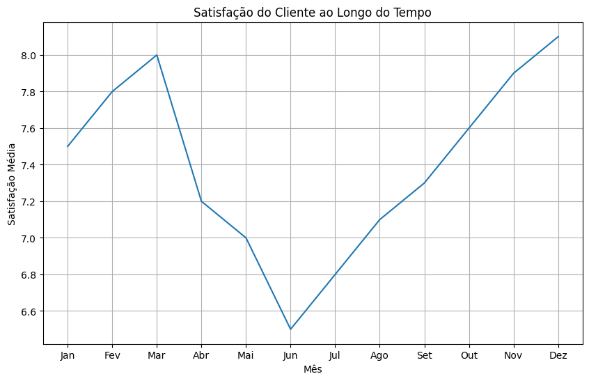
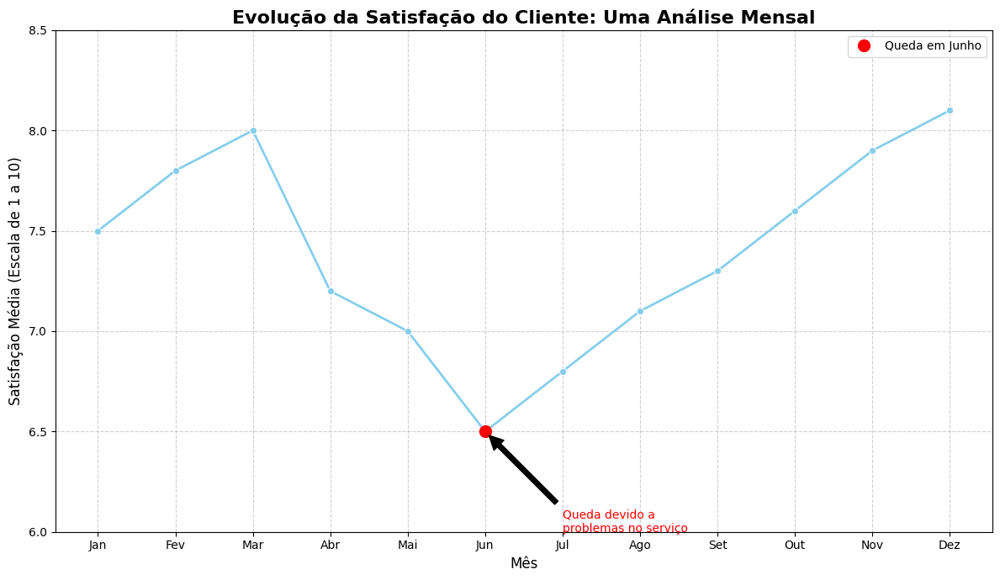
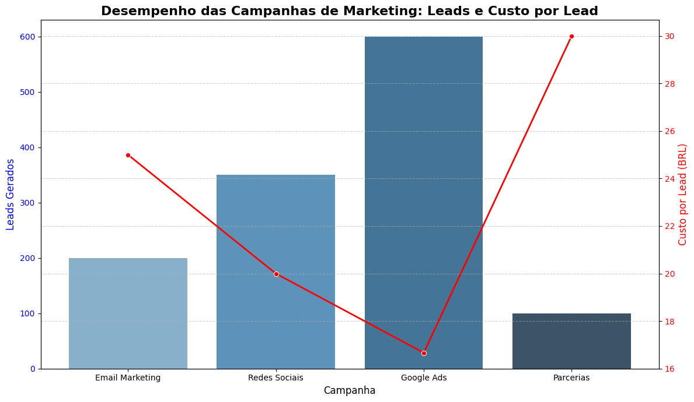

Storytelling e Criação de Relatórios em Ciência de Dados#
Introdução ao Storytelling com Dados#
Bem-vindos ao quinto dia do nosso curso de Introdução à Ciência de Dados! Hoje, vamos explorar uma das habilidades mais cruciais para qualquer cientista de dados: a capacidade de transformar dados brutos em narrativas convincentes e relatórios impactantes. Não basta apenas analisar dados e encontrar insights; é fundamental saber comunicá-los de forma eficaz para influenciar decisões e gerar valor.
Definição e Importância#
Storytelling com Dados é a arte de construir uma narrativa em torno dos seus dados, utilizando visualizações e texto para guiar o público através de uma jornada de descoberta. É a ponte entre a análise técnica e a compreensão humana, permitindo que informações complexas sejam digeridas e lembradas facilmente.
Em um mundo onde somos bombardeados por informações, a capacidade de contar uma história com dados se destaca. Ela transforma números frios em insights acionáveis, despertando o interesse e a emoção do público. Um bom storytelling pode:
Simplificar a Complexidade: Tornar análises complexas acessíveis a um público não técnico.
Aumentar o Engajamento: Prender a atenção do público e mantê-lo interessado na mensagem.
Influenciar Decisões: Apresentar os insights de forma persuasiva, levando à ação.
Melhorar a Retenção: Histórias são mais fáceis de lembrar do que tabelas e gráficos isolados.
Por que Contar Histórias com Dados?#
Pense na última vez que você se sentiu realmente impactado por uma apresentação de dados. Provavelmente, não foi por uma planilha cheia de números, mas sim por uma explicação clara, com gráficos bem elaborados e uma mensagem central bem definida. Nosso cérebro é naturalmente programado para processar informações em formato de história. Ao estruturar seus dados como uma narrativa, você aproveita essa predisposição natural, tornando sua comunicação mais poderosa e memorável.
Neste notebook, vamos aprender as técnicas e ferramentas para dominar essa habilidade essencial, transformando seus dados em histórias que ressoam e geram impacto real.
Princípios Fundamentais do Storytelling com Dados#
Para construir uma narrativa de dados eficaz, é essencial seguir alguns princípios fundamentais que garantem clareza, impacto e relevância para o seu público.
Entender o Público-Alvo#
Antes de começar a criar sua história, pergunte-se: Quem é o meu público? Quais são seus conhecimentos prévios sobre o assunto? Quais são suas preocupações e interesses? Adaptar a linguagem, o nível de detalhe e as visualizações ao seu público é crucial para garantir que a mensagem seja bem recebida e compreendida.
Definir a Mensagem Principal#
Qual é o insight mais importante que você quer transmitir? Qual é a ação que você espera que seu público tome após ver seus dados? Ter uma mensagem central clara e concisa é o alicerce de qualquer boa história. Tudo o que você apresentar deve apoiar e reforçar essa mensagem.
Escolher a Visualização Certa#
A visualização de dados é a linguagem do storytelling com dados. A escolha do gráfico ou diagrama correto pode fazer toda a diferença na clareza da sua mensagem. Pense no tipo de relacionamento que você quer mostrar (comparação, distribuição, composição, tendência) e selecione a visualização que melhor o representa. Evite gráficos complexos ou confusos que possam desviar a atenção da sua mensagem.
Simplificar e Focar na Clareza#
Menos é mais. Remova qualquer elemento visual ou textual que não contribua diretamente para a sua mensagem. Use cores de forma estratégica, rótulos claros e títulos descritivos. O objetivo é reduzir a carga cognitiva do seu público, permitindo que ele absorva a informação sem esforço.
Criar um Enredo Envolvente#
Uma história tem começo, meio e fim. No storytelling com dados, isso significa:
Introdução: Apresente o contexto e o problema que seus dados abordam.
Desenvolvimento: Mostre os dados, as análises e os insights que levam à sua mensagem principal. Aqui, as visualizações são protagonistas.
Conclusão: Resuma os principais insights e apresente as recomendações ou chamadas para ação. O que o público deve fazer com essa informação?
Ao seguir esses princípios, você estará bem equipado para transformar seus dados em histórias que não apenas informam, mas também inspiram e impulsionam a ação.
Visualizações de Dados Eficazes#
A visualização é o coração do storytelling com dados. Um gráfico bem construído pode transmitir uma mensagem complexa de forma instantânea e intuitiva. No entanto, um gráfico mal projetado pode confundir ou, pior, enganar o público.
Tipos de Gráficos e Quando Usá-los#
A escolha do tipo de gráfico depende do tipo de dado e da mensagem que você quer transmitir:
Gráficos de Barras: Ideais para comparar categorias discretas. Podem ser verticais ou horizontais.
Gráficos de Linha: Excelentes para mostrar tendências ao longo do tempo ou para comparar múltiplas séries temporais.
Gráficos de Pizza/Rosca: Usados para mostrar a proporção de partes em relação a um todo. Use com cautela, pois podem ser difíceis de interpretar com muitas categorias.
Gráficos de Dispersão (Scatter Plots): Perfeitos para mostrar a relação entre duas variáveis numéricas e identificar padrões, correlações ou outliers.
Histogramas: Mostram a distribuição de uma única variável numérica, agrupando dados em “caixas” (bins).
Box Plots (Gráficos de Caixa): Úteis para visualizar a distribuição de dados e identificar a mediana, quartis e outliers. Ótimos para comparar distribuições entre grupos.
Mapas de Calor (Heatmaps): Representam dados em uma matriz onde os valores são codificados por cores. Bons para mostrar padrões em grandes conjuntos de dados, como correlações entre variáveis.
Boas Práticas de Design de Visualizações#
Simplicidade: Remova elementos desnecessários (“chart junk”). Cada elemento deve ter um propósito.
Clareza: Rótulos claros, títulos descritivos e legendas fáceis de entender.
Consistência: Use cores, fontes e estilos de forma consistente em todas as suas visualizações.
Acessibilidade: Considere pessoas com deficiência visual (ex: daltonismo) ao escolher paletas de cores.
Contexto: Forneça contexto suficiente para que o público entenda o que está vendo. Inclua unidades de medida, fontes dos dados e o período de tempo.
Destaque: Use cores, tamanho ou posição para destacar os pontos mais importantes da sua história.
Ferramentas (Python)#
Para criar visualizações eficazes em Python, as bibliotecas mais comuns e poderosas são:
Matplotlib: A biblioteca fundamental para visualização em Python. Oferece controle total sobre cada aspecto do gráfico, mas pode ser mais verbosa.
Seaborn: Construída sobre o Matplotlib, oferece uma interface de alto nível para criar gráficos estatísticos atraentes com menos código. Ideal para exploração de dados.
Plotly: Permite criar gráficos interativos e dinâmicos que podem ser facilmente incorporados em dashboards ou relatórios web. Ótimo para explorar dados de forma interativa.
Vamos ver alguns exemplos práticos de como usar essas ferramentas para criar visualizações que contam uma história.
Criação de Relatórios Impactantes#
Um relatório de dados eficaz não é apenas uma coleção de gráficos e tabelas; é um documento que conta uma história coerente, apresenta insights claros e orienta o leitor para a ação. A estrutura e a clareza são fundamentais para garantir que sua mensagem seja absorvida.
Estrutura de um Relatório de Dados#
Uma estrutura comum e eficaz para relatórios de dados inclui:
Título: Claro e conciso, indicando o tema do relatório.
Resumo Executivo: Uma visão geral dos principais insights e recomendações. Deve ser capaz de ser lido de forma independente e fornecer as informações mais importantes rapidamente.
Introdução: Contexto do problema, objetivos da análise e perguntas que o relatório busca responder.
Metodologia (Opcional): Breve descrição de como os dados foram coletados, limpos e analisados.
Análise e Insights: O corpo principal do relatório, onde os dados são apresentados através de visualizações e acompanhados de texto explicativo. Cada seção deve focar em um insight ou conjunto de insights relacionados.
Recomendações/Conclusões: Baseado nos insights, o que deve ser feito? Quais são as implicações dos resultados? Quais são os próximos passos?
Apêndices (Opcional): Dados brutos, detalhes técnicos, ou informações adicionais que não são essenciais para a narrativa principal, mas podem ser úteis para quem quiser aprofundar.
Dicas para Escrita Clara e Concisa#
Linguagem Simples: Evite jargões técnicos sempre que possível. Se precisar usar, explique-os.
Foco na Mensagem: Cada parágrafo e cada visualização devem contribuir para a mensagem principal do relatório.
Use Títulos e Subtítulos: Organize o conteúdo de forma lógica para facilitar a leitura e a navegação.
Listas e Marcadores: Use-os para apresentar informações de forma concisa e fácil de digerir.
Revise e Edite: Peça a outras pessoas para lerem seu relatório para garantir clareza e identificar possíveis ambiguidades.
Exemplos Práticos com Python#
Vamos agora aplicar os conceitos de storytelling com dados usando Python. Utilizaremos bibliotecas populares como pandas para manipulação de dados, matplotlib e seaborn para visualização.
Exemplo 1: Transformando Dados Brutos em uma Narrativa Simples#
Imagine que você é um analista de dados em uma empresa de e-commerce e precisa apresentar o desempenho de vendas de diferentes categorias de produtos no último mês. Os dados brutos podem ser apenas uma tabela de números. Nosso objetivo é transformá-los em uma história clara e visualmente atraente.
Primeiro, vamos simular alguns dados de vendas:
import pandas as pd
import matplotlib.pyplot as plt
import seaborn as sns
# Dados simulados de vendas por categoria
data = {
'Categoria': ['Eletrônicos', 'Roupas', 'Livros', 'Alimentos', 'Casa'],
'Vendas_Milhoes_BRL': [12.5, 8.2, 5.1, 15.3, 7.8]
}
df_vendas = pd.DataFrame(data)
print('Dados de Vendas por Categoria:')
print(df_vendas)
# Ordenar os dados para melhor visualização
df_vendas = df_vendas.sort_values(by='Vendas_Milhoes_BRL', ascending=False)
# Criar o gráfico de barras
plt.figure(figsize=(10, 6))
sns.barplot(x='Vendas_Milhoes_BRL', y='Categoria', data=df_vendas, palette='viridis')
plt.title('Desempenho de Vendas por Categoria (Último Mês)', fontsize=16)
plt.xlabel('Vendas (Milhões de BRL)', fontsize=12)
plt.ylabel('Categoria de Produto', fontsize=12)
plt.grid(axis='x', linestyle='--', alpha=0.7)
plt.tight_layout()
plt.show()
# Adicionando a narrativa
print('\nNarrativa:\n')
print(f'Os dados de vendas do último mês revelam que a categoria de **Alimentos** liderou com folga, atingindo {df_vendas.iloc[0]["Vendas_Milhoes_BRL"]} milhões de BRL. Isso sugere uma forte demanda por produtos essenciais ou de consumo rápido. Em segundo lugar, os **Eletrônicos** mantiveram um bom desempenho, enquanto **Livros** apresentaram as menores vendas. É importante investigar os fatores por trás do sucesso de Alimentos e Eletrônicos, e considerar estratégias para impulsionar as vendas nas categorias de menor desempenho, como Livros e Casa.')
Dados de Vendas por Categoria:
Categoria Vendas_Milhoes_BRL
0 Eletrônicos 12.5
1 Roupas 8.2
2 Livros 5.1
3 Alimentos 15.3
4 Casa 7.8
/tmp/ipykernel_2324/72400477.py:20: FutureWarning:
Passing `palette` without assigning `hue` is deprecated and will be removed in v0.14.0. Assign the `y` variable to `hue` and set `legend=False` for the same effect.
sns.barplot(x='Vendas_Milhoes_BRL', y='Categoria', data=df_vendas, palette='viridis')

Narrativa:
Os dados de vendas do último mês revelam que a categoria de **Alimentos** liderou com folga, atingindo 15.3 milhões de BRL. Isso sugere uma forte demanda por produtos essenciais ou de consumo rápido. Em segundo lugar, os **Eletrônicos** mantiveram um bom desempenho, enquanto **Livros** apresentaram as menores vendas. É importante investigar os fatores por trás do sucesso de Alimentos e Eletrônicos, e considerar estratégias para impulsionar as vendas nas categorias de menor desempenho, como Livros e Casa.
Exemplo 2: Melhorando uma Visualização para Contar uma História#
Vamos pegar um gráfico simples e aplicar algumas das boas práticas de design para transformá-lo em uma visualização mais eficaz e que conte uma história mais clara. Usaremos um conjunto de dados simulado de satisfação do cliente ao longo do tempo.
Primeiro, o gráfico “antes”:
# Dados simulados de satisfação do cliente ao longo do tempo
data_satisfacao = {
'Mês': ['Jan', 'Fev', 'Mar', 'Abr', 'Mai', 'Jun', 'Jul', 'Ago', 'Set', 'Out', 'Nov', 'Dez'],
'Satisfacao_Media': [7.5, 7.8, 8.0, 7.2, 7.0, 6.5, 6.8, 7.1, 7.3, 7.6, 7.9, 8.1]
}
df_satisfacao = pd.DataFrame(data_satisfacao)
plt.figure(figsize=(10, 6))
plt.plot(df_satisfacao['Mês'], df_satisfacao['Satisfacao_Media'])
plt.title('Satisfação do Cliente ao Longo do Tempo')
plt.xlabel('Mês')
plt.ylabel('Satisfação Média')
plt.grid(True)
plt.show()

Agora, vamos aplicar melhorias para contar uma história:
Destaque: Adicionar um ponto de destaque para o mês de Junho, onde a satisfação caiu significativamente.
Anotação: Explicar o que pode ter acontecido em Junho.
Cores: Usar cores para guiar o olhar.
Título e Legendas: Mais descritivos.
Gráfico “depois”:
plt.figure(figsize=(12, 7))
sns.lineplot(x='Mês', y='Satisfacao_Media', data=df_satisfacao, marker='o', color='skyblue', linewidth=2)
# Destacar o ponto de queda (Junho)
junho_index = df_satisfacao[df_satisfacao['Mês'] == 'Jun'].index[0]
plt.plot(df_satisfacao['Mês'][junho_index], df_satisfacao['Satisfacao_Media'][junho_index], 'o', color='red', markersize=10, label='Queda em Junho')
# Anotar a queda
plt.annotate('Queda devido a\nproblemas no serviço',
xy=(junho_index, df_satisfacao['Satisfacao_Media'][junho_index]),
xytext=(junho_index + 1, df_satisfacao['Satisfacao_Media'][junho_index] - 0.5),
arrowprops=dict(facecolor='black', shrink=0.05),
fontsize=10,
color='red')
plt.title('Evolução da Satisfação do Cliente: Uma Análise Mensal', fontsize=16, fontweight='bold')
plt.xlabel('Mês', fontsize=12)
plt.ylabel('Satisfação Média (Escala de 1 a 10)', fontsize=12)
plt.ylim(6.0, 8.5) # Ajustar o limite do eixo Y para melhor visualização
plt.grid(True, linestyle='--', alpha=0.6)
plt.legend()
plt.tight_layout()
plt.show()
print('\nNarrativa Aprimorada:\n')
print('A satisfação média dos nossos clientes apresentou uma tendência geralmente positiva ao longo do ano, culminando em um pico de 8.1 em Dezembro. No entanto, observamos uma queda notável em Junho, atingindo 6.5. Uma investigação revelou que essa diminuição foi diretamente ligada a problemas no serviço de entrega naquele mês. Após a resolução desses problemas, a satisfação voltou a crescer consistentemente. Isso reforça a importância de monitorar a qualidade do serviço para manter a satisfação do cliente em alta.')

Narrativa Aprimorada:
A satisfação média dos nossos clientes apresentou uma tendência geralmente positiva ao longo do ano, culminando em um pico de 8.1 em Dezembro. No entanto, observamos uma queda notável em Junho, atingindo 6.5. Uma investigação revelou que essa diminuição foi diretamente ligada a problemas no serviço de entrega naquele mês. Após a resolução desses problemas, a satisfação voltou a crescer consistentemente. Isso reforça a importância de monitorar a qualidade do serviço para manter a satisfação do cliente em alta.
Exemplo 3: Criando um Mini-Relatório com Insights#
Para este exemplo, vamos simular um cenário onde precisamos criar um pequeno relatório sobre o desempenho de campanhas de marketing, focando em como apresentar os insights de forma acionável.
Primeiro, os dados simulados:
# Dados simulados de desempenho de campanhas de marketing
data_campanhas = {
'Campanha': ['Email Marketing', 'Redes Sociais', 'Google Ads', 'Parcerias'],
'Investimento_BRL': [5000, 7000, 10000, 3000],
'Leads_Gerados': [200, 350, 600, 100],
'Taxa_Conversao': [0.05, 0.03, 0.08, 0.02]
}
df_campanhas = pd.DataFrame(data_campanhas)
# Calcular o Custo por Lead (CPL)
df_campanhas['Custo_por_Lead'] = df_campanhas['Investimento_BRL'] / df_campanhas['Leads_Gerados']
print('Dados de Desempenho de Campanhas:')
print(df_campanhas)
# Visualização: Comparação de Leads Gerados e Custo por Lead
fig, ax1 = plt.subplots(figsize=(12, 7))
sns.barplot(x='Campanha', y='Leads_Gerados', data=df_campanhas, palette='Blues_d', ax=ax1)
ax1.set_xlabel('Campanha', fontsize=12)
ax1.set_ylabel('Leads Gerados', color='blue', fontsize=12)
ax1.tick_params(axis='y', labelcolor='blue')
ax2 = ax1.twinx()
sns.lineplot(x='Campanha', y='Custo_por_Lead', data=df_campanhas, marker='o', color='red', linewidth=2, ax=ax2)
ax2.set_ylabel('Custo por Lead (BRL)', color='red', fontsize=12)
ax2.tick_params(axis='y', labelcolor='red')
plt.title('Desempenho das Campanhas de Marketing: Leads e Custo por Lead', fontsize=16, fontweight='bold')
plt.grid(True, linestyle='--', alpha=0.6)
plt.tight_layout()
plt.show()
# Mini-Relatório com Insights Acionáveis
print('\n--- Mini-Relatório de Campanhas de Marketing ---\n')
print('**Resumo Executivo:**\n')
print('Este relatório analisa o desempenho das campanhas de marketing do último período, focando na geração de leads e no custo por lead. Identificamos que o **Google Ads** é a campanha mais eficiente em termos de custo-benefício, gerando o maior número de leads com o menor Custo por Lead (CPL).')
print('\n**Insights Principais:**\n')
print(f'1. **Google Ads**: Gerou {df_campanhas[df_campanhas["Campanha"] == "Google Ads"]["Leads_Gerados"].iloc[0]} leads com um CPL de {df_campanhas[df_campanhas["Campanha"] == "Google Ads"]["Custo_por_Lead"].iloc[0]:.2f} BRL. É a campanha mais eficaz.')
print(f'2. **Redes Sociais**: Embora tenha gerado um bom volume de leads ({df_campanhas[df_campanhas["Campanha"] == "Redes Sociais"]["Leads_Gerados"].iloc[0]}), seu CPL ({df_campanhas[df_campanhas["Campanha"] == "Redes Sociais"]["Custo_por_Lead"].iloc[0]:.2f} BRL) é mais alto que o do Google Ads.')
print(f'3. **Parcerias**: Apresentou o menor número de leads ({df_campanhas[df_campanhas["Campanha"] == "Parcerias"]["Leads_Gerados"].iloc[0]}) e o maior CPL ({df_campanhas[df_campanhas["Campanha"] == "Parcerias"]["Custo_por_Lead"].iloc[0]:.2f} BRL), indicando baixa eficiência.')
print('\n**Recomendações Acionáveis:**\n')
print('1. **Aumentar Investimento em Google Ads**: Dada a alta eficiência, recomendamos realocar parte do orçamento para esta campanha.\n')
print('2. **Otimizar Campanhas de Redes Sociais**: Analisar segmentação e criativos para reduzir o CPL e aumentar a taxa de conversão.\n')
print('3. **Reavaliar Parcerias**: Investigar a efetividade das parcerias atuais ou buscar novas que ofereçam melhor retorno sobre o investimento.\n')
print('\nEste relatório serve como base para otimizar nossos esforços de marketing e maximizar o retorno sobre o investimento.\n')
Dados de Desempenho de Campanhas:
Campanha Investimento_BRL Leads_Gerados Taxa_Conversao \
0 Email Marketing 5000 200 0.05
1 Redes Sociais 7000 350 0.03
2 Google Ads 10000 600 0.08
3 Parcerias 3000 100 0.02
Custo_por_Lead
0 25.000000
1 20.000000
2 16.666667
3 30.000000
/tmp/ipykernel_2324/2155446956.py:19: FutureWarning:
Passing `palette` without assigning `hue` is deprecated and will be removed in v0.14.0. Assign the `x` variable to `hue` and set `legend=False` for the same effect.
sns.barplot(x='Campanha', y='Leads_Gerados', data=df_campanhas, palette='Blues_d', ax=ax1)

--- Mini-Relatório de Campanhas de Marketing ---
**Resumo Executivo:**
Este relatório analisa o desempenho das campanhas de marketing do último período, focando na geração de leads e no custo por lead. Identificamos que o **Google Ads** é a campanha mais eficiente em termos de custo-benefício, gerando o maior número de leads com o menor Custo por Lead (CPL).
**Insights Principais:**
1. **Google Ads**: Gerou 600 leads com um CPL de 16.67 BRL. É a campanha mais eficaz.
2. **Redes Sociais**: Embora tenha gerado um bom volume de leads (350), seu CPL (20.00 BRL) é mais alto que o do Google Ads.
3. **Parcerias**: Apresentou o menor número de leads (100) e o maior CPL (30.00 BRL), indicando baixa eficiência.
**Recomendações Acionáveis:**
1. **Aumentar Investimento em Google Ads**: Dada a alta eficiência, recomendamos realocar parte do orçamento para esta campanha.
2. **Otimizar Campanhas de Redes Sociais**: Analisar segmentação e criativos para reduzir o CPL e aumentar a taxa de conversão.
3. **Reavaliar Parcerias**: Investigar a efetividade das parcerias atuais ou buscar novas que ofereçam melhor retorno sobre o investimento.
Este relatório serve como base para otimizar nossos esforços de marketing e maximizar o retorno sobre o investimento.
Conclusão#
Chegamos ao fim do nosso módulo sobre Storytelling e Criação de Relatórios em Ciência de Dados. Esperamos que este notebook tenha fornecido uma base sólida para você transformar seus dados em narrativas poderosas e relatórios impactantes.
Recapitulação dos Pontos Chave#
Storytelling com Dados é essencial para comunicar insights de forma eficaz e influenciar decisões.
Princípios Fundamentais incluem entender o público, definir a mensagem principal, escolher visualizações adequadas, simplificar e criar um enredo.
Visualizações Eficazes são a linguagem dos dados, e a escolha correta do gráfico, juntamente com boas práticas de design, é crucial.
Relatórios Impactantes seguem uma estrutura lógica e apresentam insights acionáveis, transformando análises em valor real.
Python oferece ferramentas poderosas (
pandas,matplotlib,seaborn) para implementar todas essas etapas.
Próximos Passos e Recursos Adicionais#
A prática leva à perfeição. Sugerimos que você:
Experimente: Pegue seus próprios dados e tente construir uma história. Comece com algo simples e vá adicionando complexidade.
Explore: Pesquise mais sobre design de visualização de dados (livros como “Storytelling with Data” de Cole Nussbaumer Knaflic são excelentes).
Compartilhe: Apresente suas análises e peça feedback. A comunicação é uma via de mão dupla.
Lembre-se: um cientista de dados não é apenas um analista, mas também um contador de histórias. Domine essa arte e você se destacará no campo da Ciência de Dados!